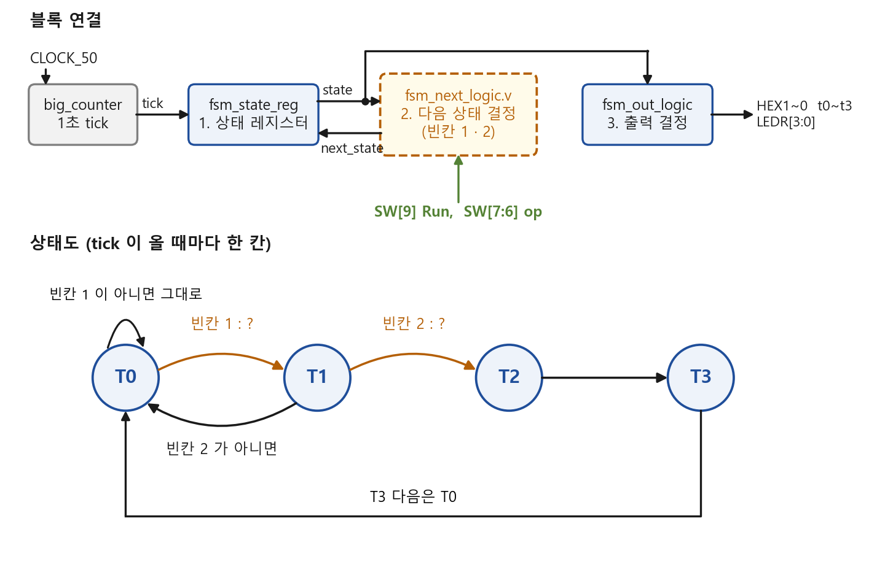

수업·시뮬레이터 › FPGA 설계 › 2026-2 Lab 6 ›
Part0 ⓷ 「단계만 세는 제어 FSM」 (약 25분)
실습 파일 받기 (zip) .v 파일 7개, 빈칸이 있는 판
Part0 : 조합회로와 순차회로 짚고 가기 · ⓶ 조합회로 (덧셈 · 뺄셈과 Z · N), ⓷ 순차회로 (단계를 세는 FSM)
Lab 6 프로세서의 제어 FSM 에서 단계(T0~T3)가 어떻게 넘어가는지만 만든다. Lab 5 신호등과 같은 세 블록(상태 레지스터 / 다음 상태 결정 / 출력 결정)이다. 단계마다 켜는 제어 신호는 Lab 6 Part1 에서 채운다.
파일
| 파일 | 하는 일 | 고칠 곳 |
|---|---|---|
warm_fsm.v |
top (세 블록 + 1초 tick 을 잇기만 한다) | 없음 |
fsm_state_reg.v |
1. 상태 레지스터 (tick 이 1인 클럭에서만 한 단계) | 없음 |
fsm_next_logic.v |
2. 다음 상태 결정 | 빈칸 ? ? ? 두 곳 |
fsm_out_logic.v |
3. 출력 결정 (HEX1~0 = t0~t3, LEDR[3:0]) | 없음 |
big_counter.v |
Lab 4 의 1초 tick | 없음 |
hex_dec.v |
4비트 → 7-세그먼트 숫자 | 없음 |
tb_fsm.v |
ModelSim 테스트벤치 (1초 대신 5클럭마다 tick) | 없음 |
빈칸
- 빈칸 1 : T0 에서 T1 로 가는 조건
- 빈칸 2 : T1 에서 T2 로 가는 조건 (어떤 명령이 T2, T3 까지 가는가)
블록도 (보면서 빈칸을 채운다)

하는 순서 (ModelSim 으로 먼저 확인하고 Quartus 로)
- 실습 파일 zip 을 받아
C:\FPGA\lab6에 풀면warm_fsm폴더가 생긴다 (팀즈 학습 자료 › labs › lab6 › warmup_fsm 의 파일을C:\FPGA\lab6\warm_fsm에 넣어도 된다) - ModelSim 에서 빈칸
? ? ?을 채우고 확인한다 (아래) - Quartus 로 보드에 올린다 (아래)
ModelSim 으로 확인
한글 주석이 「ë§ì」 처럼 깨져 보이면 Transcript 창에
set PrefSource(encoding) utf-8을 입력하고 파일을 닫았다가 다시 연다. (ModelSim 은 파일을 서유럽 글자로 읽는다. 코드는 그대로라 컴파일에는 영향이 없다)
- File > New > Project : Project Name
warm_fsm, Project LocationC:/FPGA/lab6/warm_fsm, Default Library Namework - Add Existing File : 폴더의
.v파일 일곱 개 모두tb_fsm.v warm_fsm.v fsm_state_reg.v fsm_next_logic.v fsm_out_logic.v big_counter.v hex_dec.v - 빈칸 채우기 : Project 창에서
fsm_next_logic.v를 더블클릭해 열고, 위 블록도를 보며? ? ?두 곳을 고친 뒤Ctrl+S로 저장 - Compile > Compile All (모두 초록 체크인지 본다)
- 빈칸을 채우지 않았으면
fsm_next_logic.v가 오류 (빈칸 두 곳)로 실패한다 → 빈칸부터 채운다
- 빈칸을 채우지 않았으면
- Simulate > Start Simulation →
work안의tb_fsm→ OK - 파형에 넣을 신호 고르기 : 왼쪽
sim창에서tb_fsm▸dut클릭 → Objects 창의tick→ 오른쪽 클릭 › Add Wavetb_fsm▸dut▸u2클릭 →state Run op next_state를 모두 선택 → 오른쪽 클릭 › Add Wavetick,state는 warm_fsm 의 바깥 포트가 아니라 안쪽 선이라,tb_fsm만 클릭해서는 보이지 않는다
- Radix 바꾸기 : Wave 창에서 신호를 고르고 오른쪽 클릭 › Radix
state,next_state→ Unsigned : 0 ~ 3 이 곧 T0 ~ T3op→ Binary : 00 mv, 01 add, 10 sub, 11 분기
- Transcript 창에
run -all→ Wave 창을 클릭하고F키 (Zoom Full) 로 전체를 본다
6 · 7 번을 Transcript 에 붙여 넣어 한 번에 해도 된다.
add wave /tb_fsm/dut/tick
add wave -radix unsigned /tb_fsm/dut/u2/state
add wave /tb_fsm/dut/u2/Run
add wave -radix binary /tb_fsm/dut/u2/op
add wave -radix unsigned /tb_fsm/dut/u2/next_state
Wave 에서 tick 이 1 이 될 때마다 state 가 next_state 로 바뀌는지 본다.
--- 줄 아래에 한 단계마다 한 줄씩 나온다. 단계(T0~T3)가 --- 줄의 expect 순서와 같으면 맞다.
--- Run=1, op=01 add (expect T1 T2 T3 T0)
851 ns Run=1 op=01 -> T1 LEDR[3:0]=0010
951 ns Run=1 op=01 -> T2 LEDR[3:0]=0100
...
Quartus 로 보드에 올리기
- 새 프로젝트: 폴더
C:\FPGA\lab6\warm_fsm(ModelSim 과 같은 폴더), 이름·top =warm_fsm, 칩5CSEMA5F31C6 - 파일 여섯 개 추가:
warm_fsm.v fsm_state_reg.v fsm_next_logic.v fsm_out_logic.v big_counter.v hex_dec.v(tb_fsm.v는 넣지 않는다) - Assignments > Import Assignments →
C:\FPGA\DE1_SoC.qsf - 컴파일 → 보드에 올리기
스위치 · 버튼 · 불
| 보드 | 뜻 |
|---|---|
| SW[9] | Run (1 = 실행) |
| SW[7:6] | op (op코드) : 00 mv, 01 add, 10 sub, 11 분기 |
| KEY[0] | 리셋 (T0) |
| HEX1~0 | 지금 단계 t0 ~ t3 |
| LEDR[3:0] | 지금 단계 (T0 = LEDR[0] … T3 = LEDR[3], 하나만 켜짐) |
1초마다 한 단계 나아간다 (CLOCK_50 + big_counter).
보드에서 볼 것
- SW[9] = 0 → t0 에 머문다
- SW[9] = 1, op = 00 (mv) → t0 t1 t0 t1 …
- op = 01 (add) 또는 10 (sub) → t0 t1 t2 t3 t0 …
- op = 11 (분기) → t0 t1 t0 t1 …
- 왜 mv 와 분기는 두 단계, add·sub 는 네 단계일까?